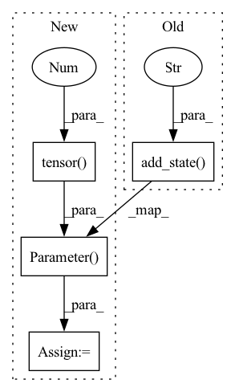

Pattern ID :33674

Before Change
super().__init__(dist_sync_on_step=dist_sync_on_step)
self.add_state("true_positive", default=torch.tensor(0), dist_reduce_fx="sum")
self.add_state("false_positive", default=torch.tensor(0), dist_reduce_fx="sum")
def update(self, preds: torch.Tensor, targets: torch.Tensor):
y_pred = torch.sigmoid(preds).reshape(-1)
y_true = targets.reshape(-1)
After Change
def __init__(self):
super().__init__()
self.true_positive = nn.Parameter(torch.tensor(0),requires_grad=False)
self.false_positive = nn.Parameter(torch.tensor(0),requires_grad=False)
def forward(self, preds: torch.Tensor, targets: torch.Tensor):
y_pred = torch.sigmoid(preds).reshape(-1)
y_true = targets.reshape(-1)
In pattern: SUPERPATTERN
Frequency: 3
Non-data size: 4
Instances
Fragment ID: 96917404
Project Name: lyhue1991/torchkeras
Commit Name: 6d83c54b5feeffd1a32be546ad9b451f99b39707
Time: 2023-01-30
Author: lyhue1991@163.com
File Name: torchkeras/metrics.py
M Class Name: Precision
N Class Name: Precision
M Method Name: __init__(1)
N Method Name: __init__(2)
M Parent Class: nn.Module
N Parent Class: Metric
M File Name: torchkeras/metrics.py
N File Name: torchkeras/metrics.py
M Start Line: 42
M End Line: 46
N Start Line: 30
N End Line: 33
'>
Before Change
def __init__(self, dist_sync_on_step=False):
super().__init__(dist_sync_on_step=dist_sync_on_step)
self.add_state("true_positive", default=torch.tensor(0), dist_reduce_fx="sum")
self.add_state("total_positive", default=torch.tensor(0), dist_reduce_fx="sum")
def update(self, preds: torch.Tensor, targets: torch.Tensor):
y_pred = torch.sigmoid(preds).reshape(-1)
After Change
class Recall(nn.Module):
def __init__(self):
super().__init__()
self.true_positive = nn.Parameter(torch.tensor(0),requires_grad=False)
self.total_positive = nn.Parameter(torch.tensor(0),requires_grad=False)
def forward(self, preds: torch.Tensor, targets: torch.Tensor):
y_pred = torch.sigmoid(preds).reshape(-1)
'>
Fragment ID: 96917405
Project Name: lyhue1991/torchkeras
Commit Name: 6d83c54b5feeffd1a32be546ad9b451f99b39707
Time: 2023-01-30
Author: lyhue1991@163.com
File Name: torchkeras/metrics.py
M Class Name: Recall
N Class Name: Recall
M Method Name: __init__(1)
N Method Name: __init__(2)
M Parent Class: nn.Module
N Parent Class: Metric
M File Name: torchkeras/metrics.py
N File Name: torchkeras/metrics.py
M Start Line: 63
M End Line: 67
N Start Line: 54
N End Line: 57
'>
Before Change
def __init__(self, dist_sync_on_step=False):
super().__init__(dist_sync_on_step=dist_sync_on_step)
self.add_state("correct", default=torch.tensor(0), dist_reduce_fx="sum")
self.add_state("total", default=torch.tensor(0), dist_reduce_fx="sum")
def update(self, preds: torch.Tensor, targets: torch.Tensor):
assert preds.shape == targets.shape
After Change
class Accuracy(nn.Module):
def __init__(self):
super().__init__()
self.correct = nn.Parameter(torch.tensor(0),requires_grad=False)
self.total = nn.Parameter(torch.tensor(0),requires_grad=False)
def forward(self, preds: torch.Tensor, targets: torch.Tensor):
assert preds.shape == targets.shape
'>
Fragment ID: 96917403
Project Name: lyhue1991/torchkeras
Commit Name: 6d83c54b5feeffd1a32be546ad9b451f99b39707
Time: 2023-01-30
Author: lyhue1991@163.com
File Name: torchkeras/metrics.py
M Class Name: Accuracy
N Class Name: Accuracy
M Method Name: __init__(1)
N Method Name: __init__(2)
M Parent Class: nn.Module
N Parent Class: Metric
M File Name: torchkeras/metrics.py
N File Name: torchkeras/metrics.py
M Start Line: 21
M End Line: 25
N Start Line: 8
N End Line: 11